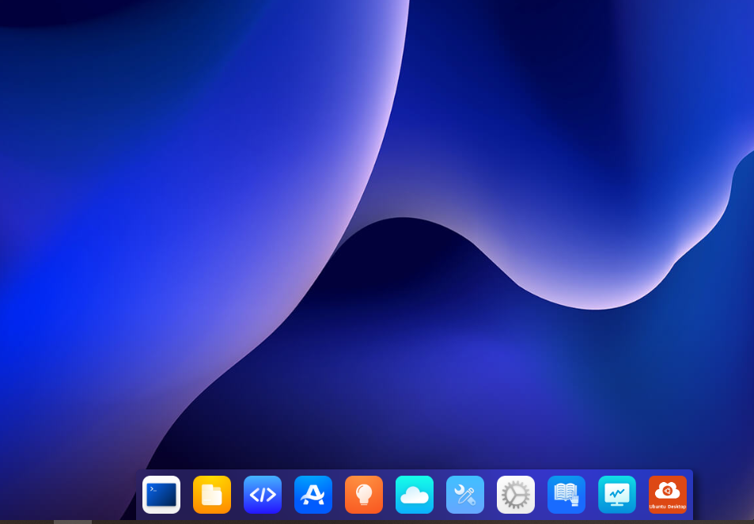
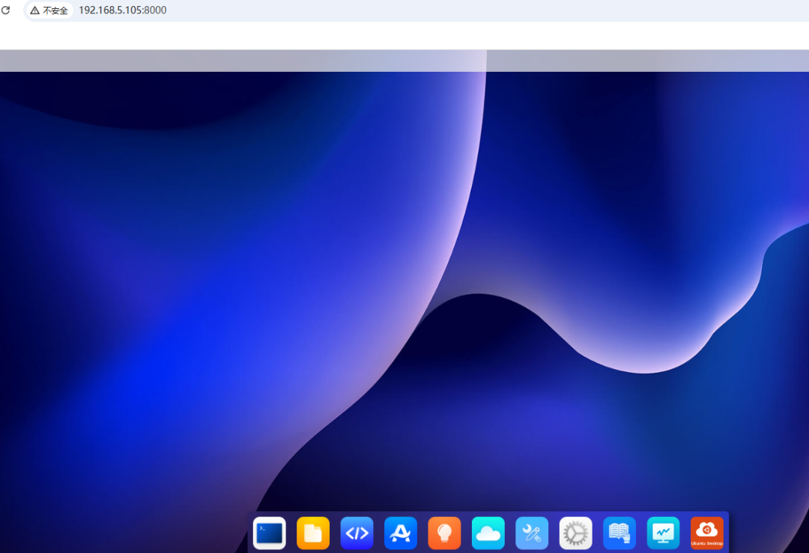
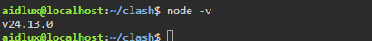
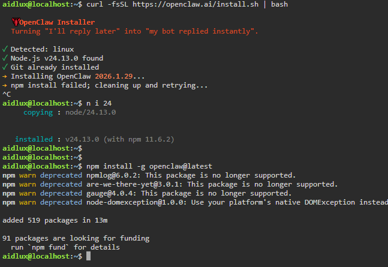
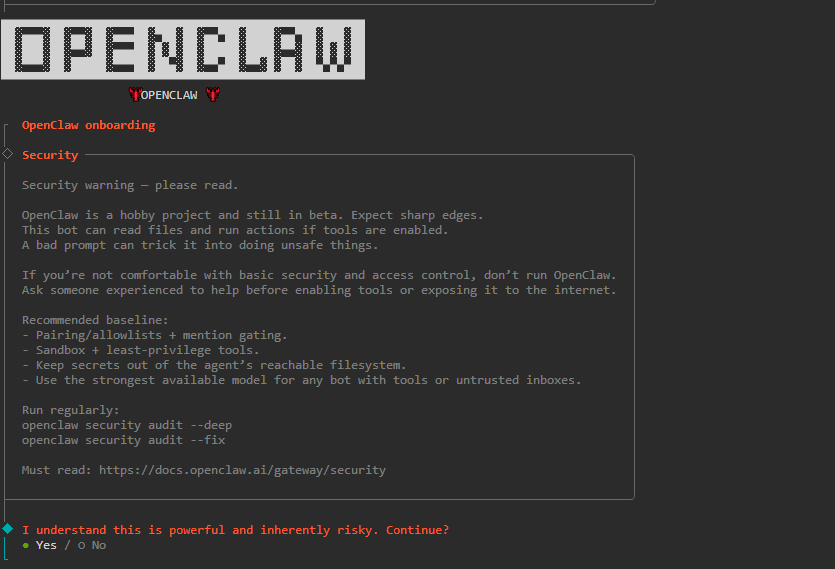
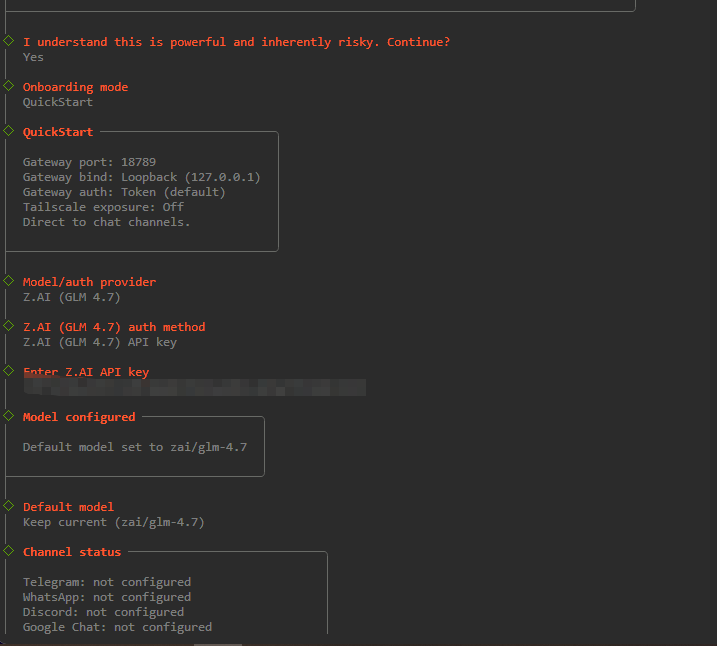
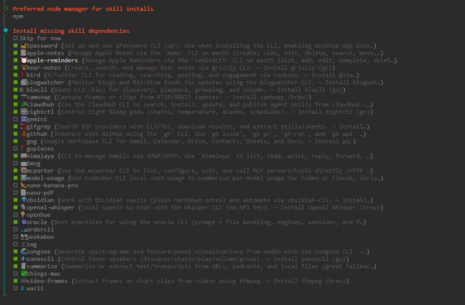
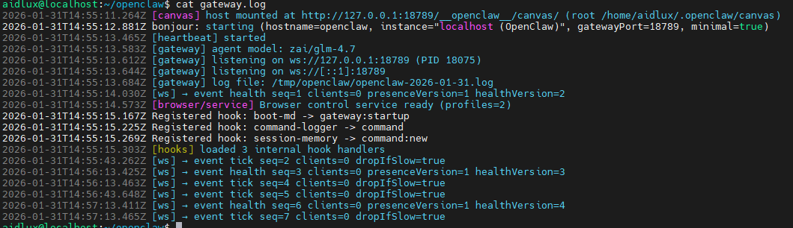
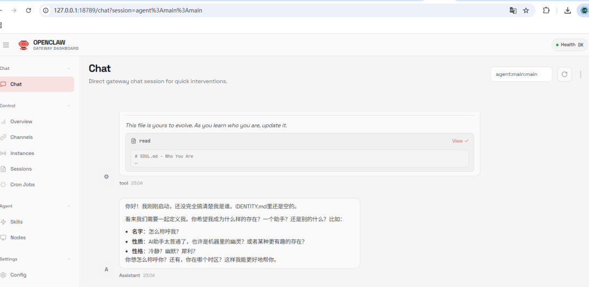

更多好玩技术
点击蓝字，关注我！
📱 旧手机别扔！手把手教你打造24小时在线AI助手（Openclaw/Clawdbot部署全攻略）
前言
想拥有一个24小时在线的AI机器人，但不想买云服务器？💡 今天教大家把闲置安卓手机变身为Linux服务器，零成本部署 Moltbot（Clawbot）！
通过 AidLux（手机上的Linux环境）+ 简单的命令行操作，即使你是小白也能跟着操作成功。全程无需root，安卓10以上机型均可。
🛠️ 准备工作
一部闲置安卓手机（建议4G+64G以上，Android 10+）
稳定的WiFi网络
电脑（用于SSH连接，可选但推荐）
【https://aidlux.com/platform】
第一步：安装AidLux（给你的手机装上Linux系统）
AidLux是一个基于Android的Linux环境，让我们能在手机上运行完整的Linux命令。
登录官网https://aidlux.com/platform下载安装
打开应用，按引导完成初始化（需要授予存储权限）
记住界面上显示的 IP地址（通常是192.168.x.x:8000）
💡 小贴士：建议进入 AidLux 设置开启"锁屏保活"和"后台运行"权限，防止手机杀后台。

第二步：http连接 & 配置网络环境
在电脑上通过浏览器http://192.168.xx.xx:8000连接到手机（也可以在AidLux内置终端操作，但电脑键盘更方便）。

安装完成后启动服务如上图
第三步：升级Node.js到v24
AidLux自带的Node版本较旧，必须升级到v24才能运行Moltbot：
# 安装n模块用于管理Node版本npm install -g n# 安装Node.js 24（稳定版，如果24还不可用，用最新LTS）n 24# 验证版本node -v # 应显示 v24.x.x#如果n命令找不到，可能需要重启终端或执行source ~/.bashrc。

第四步：安装Moltbot（核心步骤）
先修改npm到国内源，执行官方一键安装脚本
不要用官方install.sh，直接用npm安装
npm install -g openclaw@latest
第五步：初始化配置
安装完成后，执行 onboarding 流程：
openclaw onboard
按提示完成：
登录/注册账号
配置API Key（如果需要）
选择大模型



第六步：编写守护进程（关键！手机不会断连的秘诀）
重点来了！ AidLux没有传统Linux的systemd服务，也没有crontab定时任务。如果直接运行，手机锁屏或切换应用后进程就会被杀。
我们编写一个 keep.sh 守护脚本：
# 创建脚本cat > keep.sh <<EOF#!/bin/bashwhile truedo# 检查进程是否存在（注意：根据实际进程名调整，可能是clawdbot或openclaw）chk=`ps -ef|grep openclaw|grep -v grep|wc -l`if [ $chk -eq 0 ];thenecho "$(date): 进程不见了，正在重启..." >> /home/aidlux/keep.logopenclaw gateway --verbose >>gateway.logfi# 每30秒检查一次sleep 30doneEOFchmod +x keep.sh#启动守护进程nohup sh keep.sh >>gateway.log&
✅ 验证是否成功：
ps -ef | grep keep.sh # 应该能看到keep.sh在运行第七步：设置开机自启
为了让手机重启后自动恢复服务，将启动命令写入 .bashrc：
echo"cd /home/aidlux/openclaw && nohup sh keep.sh &" >> ~/.bashrc🎯 使用技巧 & 避坑指南
1. 自动守护进程
aidlux没有cron，也没有systemd，纯靠守护进程keep.sh
2. 电量优化
手机设置 -> 电池 -> 忽略AidLux的电池优化
建议连接充电器长期运行
开启"开发者选项"中的"不锁定屏幕"（充电时）
4. 查看日志
# openclaw日志tail -f /home/aidlux/openclaw/logs/openclaw.log

✅ 完成！你现在拥有了一个...
🌐 24小时在线的AI机器人
🖥️ 随身携带的Linux服务器
💾 低功耗的智能家居控制中心（可扩展Home Assistant等）

实测一部骁龙865的旧手机，同时运行Openclaw+代理，功耗不到5W，比云服务器省钱多了！
“
扫码关注我
公众号 蛰伏突破